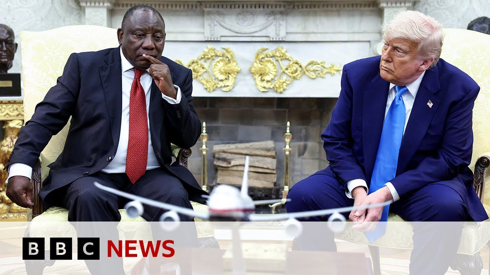

【特朗普在白宫椭圆形办公室突袭南非总统 声称存在“白人迫害”｜BBC新闻】
Summary: The meeting at the White House turned contentious as President Trump accused South African white farmers of facing genocide, playing a controversial video to support his claims, while President Ramaphosa defended his country's policies and denied government involvement in land seizures or targeted violence.
摘要： 白宫会晤中，特朗普总统指责南非白人农民面临种族灭绝，并播放争议视频佐证其说法，而拉马福萨总统则为南非政策辩护，否认政府参与土地强占或针对白人的暴力行为。

⏱️ Estimated Reading Time: 17 min
So, it was another pretty extraordinary meeting at the White House.
这又是白宫一次相当不寻常的会晤。
Depending on how you see things, it was an example of openhouse democracy that Donald Trump enjoys.
取决于你的视角，这要么是特朗普所推崇的开放式民主的范例。
Or it was another Oval Office ambush rather like that of the Ukrainian President Vladimir Zalinski a few weeks ago.
要么就是几周前对乌克兰总统泽连斯基那类椭圆形办公室突袭的重演。
This time it was the South African leader Siril Ramaposa who was the focus of Donald Trump's attack.
这次成为特朗普攻击焦点的是南非领导人西里尔·拉马福萨。
The US president insisting that white farmers in South Africa are the victims of a genocide.
美国总统坚称南非白人农民是种族灭绝的受害者。
A suggestion that has by the way been widely discredited.
顺便提一句，这种说法已被广泛质疑。
Well, last week a group of more than 50 white South African farmers arrived in the United States as refugees welcomed in by the Trump administration.
上周，50多名南非白人农民作为难民抵达美国，受到特朗普政府欢迎。
Today's meeting at the White House started off cordially enough, but soon President Trump told his staff to dim the lights and play a video to the South African leader, which he said verified his claims about the killings of white farmers.
今日白宫会晤起初气氛融洽，但很快特朗普便要求工作人员调暗灯光，向南非领导人播放据称能证实其关于白人农民被杀说法的视频。
Here's some of that exchange.
以下是部分对话内容。
Starting off with Sirill Ramiposa talking about how he planned to discuss the matter with the US president.
拉马福萨首先谈及他计划如何与美国总统商讨此事。
So it'll take him, President Trump listening to their stories, to their perspective.
因此需要特朗普总统倾听他们的故事和观点。
That is the answer to your question.
这就是问题的答案。
But Mr. President, I must say, we have No, no, wait.
但总统先生，我必须说，我们有...不，请稍等。
Uh, we have thousands of stories talking about it and we have documentaries, we have news stories on that.
我们有成千上万的相关报道，还有纪录片和新闻故事。
Is Natalie here?
娜塔莉在吗？
Somebody here to turn that.
来人操作一下这个。
I I could show you a couple of things and I would I just I have to it has to be responded to.
我可以展示一些资料...我必须对此作出回应。
Sure.
当然。
We have Let me see the articles please, if you would.
我们有...请让我看看那些文章。
And turn Excuse me.
然后打开...抱歉。
Turn the lights down.
把灯光调暗。
Turn the lights down and just put this on.
调暗灯光，播放这个。
It's right behind you.
就在你身后。
Johan, there's nothing this parliament can do.
约翰，议会对此无能为力。
With or without you, people are going to occupy land.
无论有无你参与，人们都将占领土地。
We require no permission from you, from the president, from no one.
我们不需要你的许可，不需要总统或任何人的许可。
But we are standing with this whiteness.
但我们正与这种白人特权对抗。
You are cutting the throat of Ghana to kill the po.
你们正在扼杀加纳的穷人。
The farmer kill the poor.
农民杀害穷人。
The father shoot to kill.
父亲开枪杀人。
Come on, sir.
得了吧，先生。
Kill the poor.
杀害穷人。
The farmer.
农民。
Kill the poor.
杀害穷人。
The farmer.
农民。
Now this is very bad.
这非常恶劣。
These are the These are burial sites right here.
这些是...这些就是墓地。
Burial sites.
墓地。
Over a thousand of white farmers.
超过一千名白人农民。
And those cars are lined up to pay love on a Sunday morning.
那些车辆在周日早晨排队悼念。
Each one of those white things you see is a cross.
你看到的每个白色物体都是十字架。
And there's approximately a thousand of them.
大约有一千个。
They're all white farmers, the family of white farmers.
他们都是白人农民及其家人。
And those cars aren't uh driving.
那些车辆并非在行驶。
They're stopped there to pay respects to their family member who was killed.
它们停在那里悼念被杀的家人。
Uh and it's a terrible sight.
这景象令人痛心。
I've never seen anything like it.
我从未见过这样的场景。
Both sides of the road you have crosses.
道路两旁都是十字架。
Those people are all killed.
那些人都被杀害了。
Have they told you where that is, Mr. President?
他们告诉您这是哪里了吗，总统先生？
No.
没有。
No.
没有。
I'd like to know where that is because this I've never seen.
我想知道这是哪里，因为我从未见过。
I don't.
我不知道。
Okay.
好吧。
I mean, it's in South Africa.
我的意思是，这发生在南非。
That's where we need to find out.
这正是我们需要查明的。
Thank you so much, President Trump.
非常感谢，特朗普总统。
I was asking from EMCA in South Africa.
我是代表南非EMCA提问的。
Thank you very much.
非常感谢。
Thank you very much, dear.
非常感谢，亲爱的。
Uh what would you like President Ramapo to do about the situation that we've just seen on the screen?
您希望拉马福萨总统对刚才屏幕上看到的情况采取什么行动？
I don't know.
我不知道。
Uh or look, these are articles over the last few days.
或者你看，这些是过去几天的报道。
Uh death of people.
人们的死亡。
Death.
死亡。
Death.
死亡。
Horrible death.
惨烈的死亡。
Death.
死亡。
I don't know to pick anyone.
我不知道该选哪个案例。
White South Africans are fleeing because of the violence and racist laws.
南非白人正因暴力和种族主义法律而逃离。
And this is all I mean I'll give these to you.
这些就是...我会把这些资料给你。
So when you when you say what would I like to do?
所以当你问我希望采取什么行动时...
I don't know what to do.
我不知道该怎么做。
Look at this.
看看这个。
White South African couples say that they were attacked violently and then what will you go and see for yourself if it isn't
南非白人夫妇称他们遭到暴力袭击...如果情况不属实，你愿意亲自去查看吗？
Well, I could do that.
我可以这么做。
Look, here's burial sites all over the place.
看，这里到处都是墓地。
They're all these are all white farmers that are being buried.
这些埋葬的全是白人农民。
Let me clarify that because what you saw the speeches that were being made one that is not government policy.
请允许我澄清，你们看到的演讲内容并非政府政策。
We have a multi-party democracy in South Africa that allows people to express themselves political parties to adhere to various policies and in many cases or in some cases those policies do not go along with government policy.
南非实行多党民主制，允许政党和民众表达不同政见，但这些政策常与政府政策不一致。
Our government policy is completely completely against what he was saying even in the parliament and they a small minority party which is allowed to exist in terms of our constitution but you do allow them to take land.
我国政府政策完全反对其言论，该党虽是宪法允许存在的少数党派...但你们确实允许他们强占土地。
No no no you do allow them to take land.
不，你们确实允许他们强占土地。
Nobody can take and then when they take the land they kill the white farmer and when they kill the white farmer nothing happens to them.
没人能强占...但他们强占土地后会杀害白人农民，却不用承担后果。
No, there is quite nothing happens to them.
不，他们完全不用承担后果。
There is criminality in our country.
我国存在犯罪问题。
People who do get killed unfortunately through criminal activity are not only white people.
不幸遭遇犯罪杀害的不仅是白人。
Majority of them are black people.
大多数受害者是黑人。
And we have now the farmers are not black.
而当前农民并非黑人。
The farmers are not black.
农民不是黑人。
I don't say that's good or bad, but the farmers are not black.
我不评价这是好是坏，但农民确实不是黑人。
and the people that are being killed in large numbers and you saw all those grave sites and those are people that loved ones going I guess on a Sunday morning they told me to pay respect to their loved ones that were killed their heads chopped off their they died died violently and you know I mean we're here to talk about it and I didn't know we'd get involved here but I will say this that if the news wasn't fake like NBC which is fake news.
那些大量被杀害的人...你们看到的墓地，都是逝者亲属在周日早晨前去悼念被斩首或惨死的亲人...我们在此讨论此事...我本不想介入，但我要说：如果新闻不像NBC那样造假...
Totally.
完全造假。
One of the worst.
最恶劣的假新闻。
ABC, NBC, CBS.
ABC、NBC、CBS都是。
Horrible.
糟糕透顶。
But if they weren't fake news like this jerk uh that we have here, if we had real reporters, they'd be covering it.
但如果不是像这里这个混蛋一样的假新闻...如果有真记者，他们会报道此事。
But the fake news in this country doesn't talk about that.
但这个国家的假新闻对此只字不提。
Well, that's just a flavor of that meeting in the Oval Office um a little bit earlier on.
这就是稍早前椭圆形办公室会晤的片段。
And in fact in the last couple of minutes we've heard from uh Sir Ramapose of the South African president saying that his meeting with Donald Trump went quote very well.
事实上，南非总统拉马福萨几分钟前表示，他与特朗普的会晤"非常顺利"。
Well our South Africa correspondent Puma Fellani was following that meeting in the Oval Office uh as it was being broadcast live.
我们的南非记者普玛·费拉尼实时跟踪了这场椭圆形办公室会晤。
uh she's in Johannesburg and she explained to us the background behind those claims from the Trump administration that white farmers in South Africa are being persecuted and killed and also she told us more about exactly what was being shown in that video in the Oval Office.
她在约翰内斯堡向我们解释了特朗普政府关于南非白人农民被迫害杀害说法的背景，并详细说明了白宫播放的视频内容。
What we were looking at there were two separate clips.
视频包含两个独立片段。
one from an opposition party leader Julius Malemma who is known here in South African politics for his fire brand uh narratives around how the economy should be restructured to more favorably suit black South Africans saying that the government of Nelson Mandela over the years had not done enough to tilt the power balance.
其一是反对党领袖朱利叶斯·马勒马的激烈言论，他主张经济重构应更有利于南非黑人，并指责曼德拉政府多年来未能改变权力平衡。
So he is incredibly uh divisive in South Africa a lot of people have said and perhaps is the reason why his party is not in government currently.
许多南非人认为他是极具分裂性的人物，这或许是其政党未能执政的原因。
And the other clip was of former President Jacob Zoomer who went on after he was sacked from the African National Congress went on to form a political party.
另一片段是前总统雅各布·祖马被非国大开除后组建新政党的内容。
That political party did fairly well in the in the recent elections here.
该党在近期选举中表现不俗。
Uh so he does have a following but again he's also a party that isn't um that isn't part of the current government.
他确实有支持者，但该党也非现政府成员。
Those two parties remain in opposition politics.
这两个政党仍属反对派。
Um the president going uh to great lengths there in that interaction with President Trump trying to say that each of the policies or the views expressed in those two clips are not part of the policies followed by South Africa.
拉马福萨总统极力向特朗普说明，视频中的观点均非南非现行政策。
that if anything the thing that their party has advocated for over the years was working together across racial lines.
强调其政党多年来倡导的是跨种族合作。
And this would perhaps explain why you had a mixed delegation not just of that African uh political uh party leader um John Stainhazen but also on the fringes of that businessmen who have amassed great wealth here in South Africa over the years who continue to enjoy business successfully here.
这或许解释了为何代表团包含非洲政党领袖约翰·斯坦哈森及在南非积累巨额财富的成功商人等多元成员。
You would have heard in those clips a number of the South African delegations saying that in fact South Africa has a crime problem that South Africa does not have a white genocide problem but does really have a crime problem and that if there's any way that uh countries like the US can partner either on intelligence or surveillance or infrastructure that would go a great deal towards solving that crime problem.
南非代表团多次强调该国存在犯罪问题而非白人种族灭绝，并希望与美国在情报、监控或基建方面合作解决犯罪问题。
But if we get stuck on a numbers game, it becomes then a difficult question because how do you then say which lives matter than than which ones?
但若陷入数字比较，将难以界定哪些生命更值得关注。
And we start looking at kind of being drawn into that conversation.
我们开始被卷入这类讨论。
A number of South Africans, particularly the majority of black South Africans, will want you to know that crime disproportionately still affects them.
许多南非人（尤其是占多数的黑人）希望外界了解犯罪对他们的不成比例影响。
What you've had over the years is a principle called willing buyer, willing seller, which is that the government will make an offer.
多年来实行的是"自愿买卖"原则，即政府提出报价。
If the farmer accepts, then a price will be agreed.
若农民接受则达成交易。
Sometimes there's been even criticism that those prices have been inflated, but because that land the government believes is needed and can be put to a different kind of use either through building housing for the majority of people that are without houses that they usually willing to pay those costs.
尽管有人批评报价虚高，但政府认为这些土地可用于为无房者建房等重要用途，因而愿意承担成本。
So as it stands there are no land seizures in South Africa is what security groups have repeatedly said and what the South African government has repeatedly said also over the years.
安全机构和南非政府多次强调，目前不存在土地强占行为。
That's our South Africa correspondent Punza fani there with some important context I think there um in terms of those claims that President Trump was making about the killing of white farmers in South Africa.
这是我们的南非记者普扎·法尼提供的关于特朗普总统南非白人农民被杀说法的重要背景。
Let's go to live to Washington now and speak to our correspondent there Jake Quan.
现在连线华盛顿记者杰克·权。
Um Jake, well we saw it first with President Zilinski.
杰克，我们此前在泽连斯基总统身上见过类似场景。
Now we've seen it with President Ramiposa.
现在又发生在拉马福萨总统身上。
Um a kind of roasting in the Oval Office.
这种椭圆形办公室的"拷问"。
Um it's a new kind of politics isn't it?
这是新型政治手段吧？
A new kind of diplomacy.
新型外交方式。
Certainly, I think anybody who's watching this scene happening today will be thinking back to that awful scene in February when President Zalinski was in the Oval Office.
确实，目睹今日场景的人都会想起二月泽连斯基总统在白宫的尴尬遭遇。
And I think the difference here is that when that when that beration when that altercation that that verbal jousting was happening in the Oval Office back then, it seemed somewhat unplanned that uh that the people who were involved were getting heated uh somewhat improvised.
不同之处在于，上次的言语交锋看似即兴发挥。
But like today, it seemed that Mr. Trump came to the office with the full understanding that there will be this ambush of the president Ramaposa.
而今日特朗普显然预谋了对拉马福萨总统的突袭。
Uh the TV screen that wasn't usually in the oval office was brought in.
不常出现在椭圆形办公室的电视屏幕被特意搬入。
He had dimmed the light and then started playing this video.
他调暗灯光后开始播放视频。
Everything was very carefully planned and he knew that he would be antagonizing and trying to catch the the South African president uh in this a very difficult situation and what seemed like a very cordial meeting uh had quickly frozen over as as the video was playing.
一切经过精心策划，旨在让南非总统陷入窘境——看似友好的会晤随视频播放迅速降温。
I think Mr. Ramaposa actually did a very good job not playing into uh the the conversation.
我认为拉马福萨先生成功避免了被牵着鼻子走。
Uh he remained very calm and gently uh pushed back on the idea.
他保持冷静，温和地反驳了相关说法。
I think there was also a very clever uh bringing of the right delegation.
其代表团成员的选择也很明智。
Uh Mr. Trump is someone who really enjoys uh these golfing uh and you know he enjoys winners uh and what's even better winning golfers.
特朗普偏爱